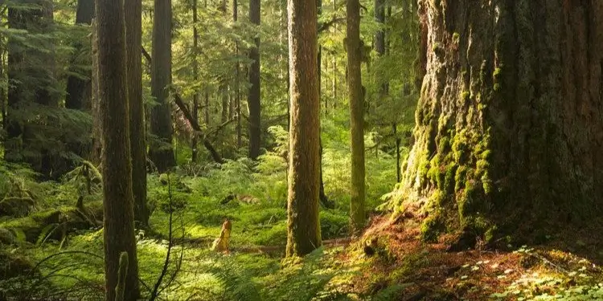

Nordic Treasures
What is the Nordic Treasures?
The first things that comes to mind might be gold or valuable artifacts. A treasure chest
from the Viking era or other artifacts.
But seriously, the Nordic forests are big and mystical. They are home to a wide variety of flora and
fauna, some of which are unique to this region.
The real treasures are many times visible on the ground and sometimes hidden beneath bushes and
low trees.
I am of course firstly talking about berries and secondly about mushrooms.
The Nordic forests are full of delicious berries like blueberries, lingonberries, cloudberries and but
also more uncommon berries like wild strawberries and cranberries.
And when it comes to mushrooms, the Nordic forests are home to a wide variety of edible mushrooms like
chanterelles, porcini, morels and saffron milk caps.
These treasures are not only delicious, but they are also packed with nutrients and health benefits. Berries are rich in antioxidants, vitamins and minerals, while mushrooms are a great source of protein, fiber and vitamins.
Does this catch your interest? If so, feel free to explore the rest of this website to learn more about the different types of berries and mushrooms found in the Nordic forests, as well as tips on how to forage for them safely and sustainably. I will also include some nature reserves and national parks that are worth visiting if you want to experience the beauty of the Nordic forests. Since I live in Sweden, most of the places I mention will be located here. And to conclude I will put up some rules and guidelines to follow when foraging in the wild in Sweden.